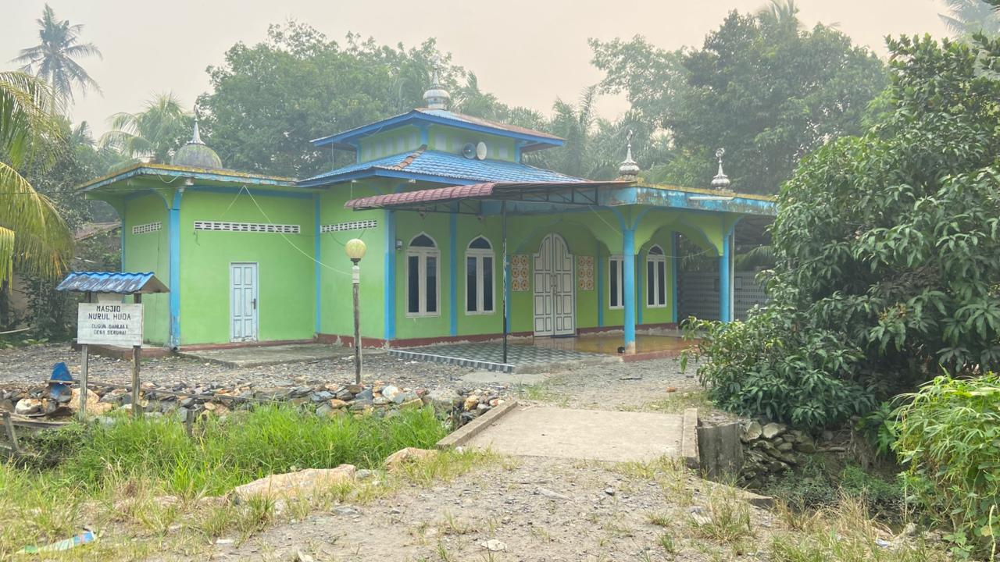
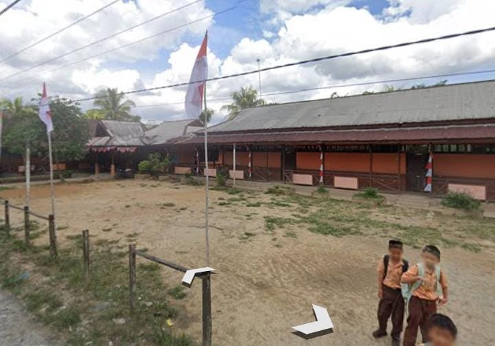

Tempat di Desa Serunai
Tempat penting yang menjadi bagian dari kehidupan masyarakat.

🏛️ Kantor Desa
Kantor Desa menjadi tempat pelayanan dan kegiatan pemerintahan desa.

🕌 Masjid
Masjid menjadi tempat ibadah dan kegiatan keagamaan masyarakat.

🏫 Sekolah Dasar
Salah satu tempat pendidikan bagi anak-anak Desa Serunai.

🎒 PAUD
Tempat pendidikan anak usia dini di lingkungan Desa Serunai.